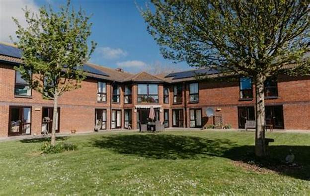

Azilul Grădinii Fericirii a fost înființat în anul 2005, cu scopul de a oferi seniorilor un loc sigur și confortabil, unde să se bucure de viață, să fie îngrijiți cu respect și să trăiască cu demnitate. Povestea noastră începe cu un vis de a crea un spațiu unde persoanele în vârstă să nu fie doar îngrijite, ci și respectate, apreciate și înconjurate de iubire. De-a lungul anilor, am crescut și ne-am diversificat serviciile pentru a satisface nevoile fiecărui locatar.
Misiunea Azilului Grădinii Fericirii este de a oferi un cămin cald și prietenos seniorilor, unde îngrijirea, respectul și confortul sunt priorități. Ne dedicăm complet îmbunătățirii calității vieții celor care ne aleg să le fim sprijin, oferind nu doar servicii medicale de înaltă calitate, ci și activități recreative și sprijin emoțional constant.
Suntem dedicați să oferim un mediu în care seniorii să se simtă în siguranță, stimulați și înconjurați de oameni care le vor binele.
Costurile pentru îngrijirea seniorilor sunt flexibile, în funcție de tipul de serviciu ales și durata șederii. Oferim pachete lunare care includ toate serviciile de bază (îngrijire medicală, cazare, mese, activități recreative).
Vă invităm să ne contactați pentru detalii suplimentare și pentru o ofertă personalizată în funcție de nevoile dumneavoastră.